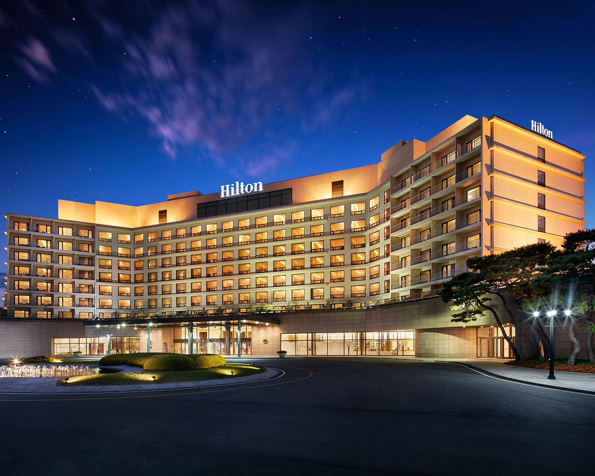
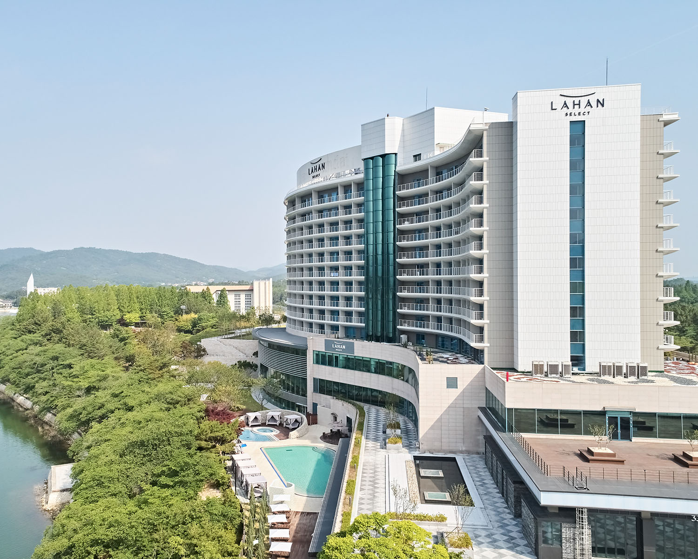
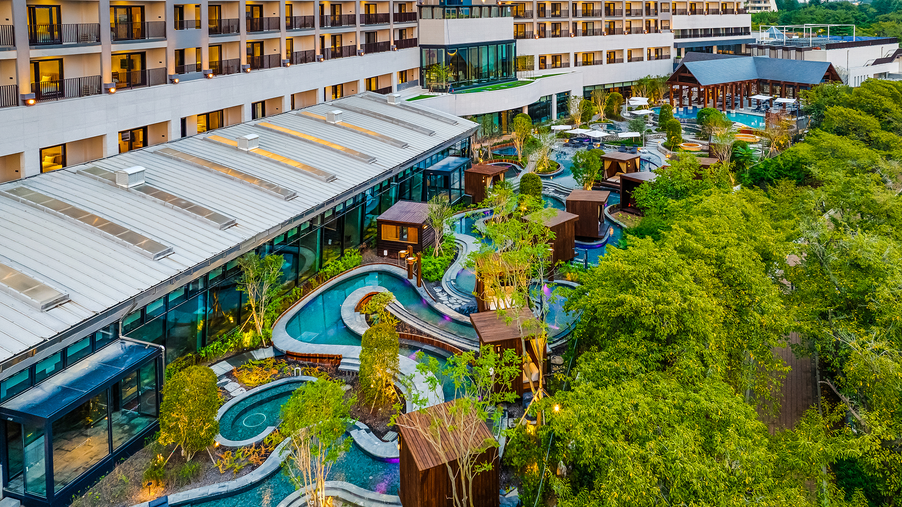
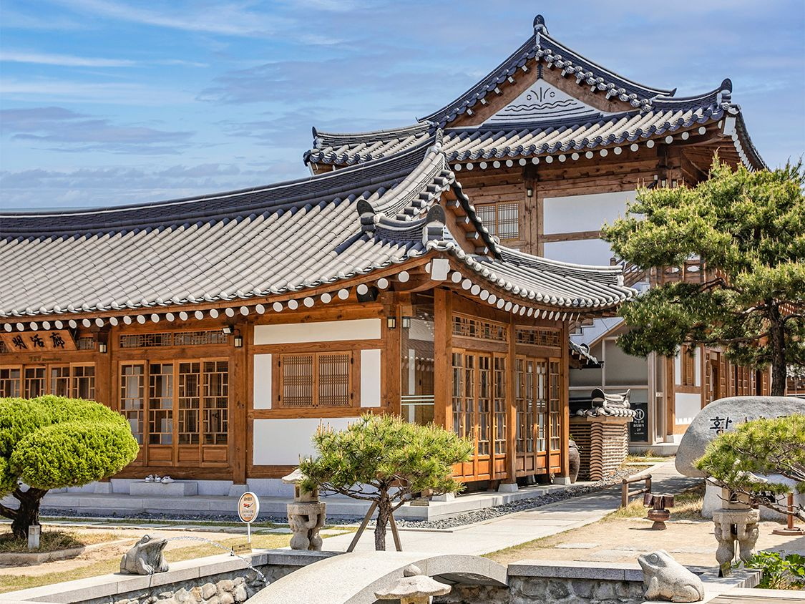
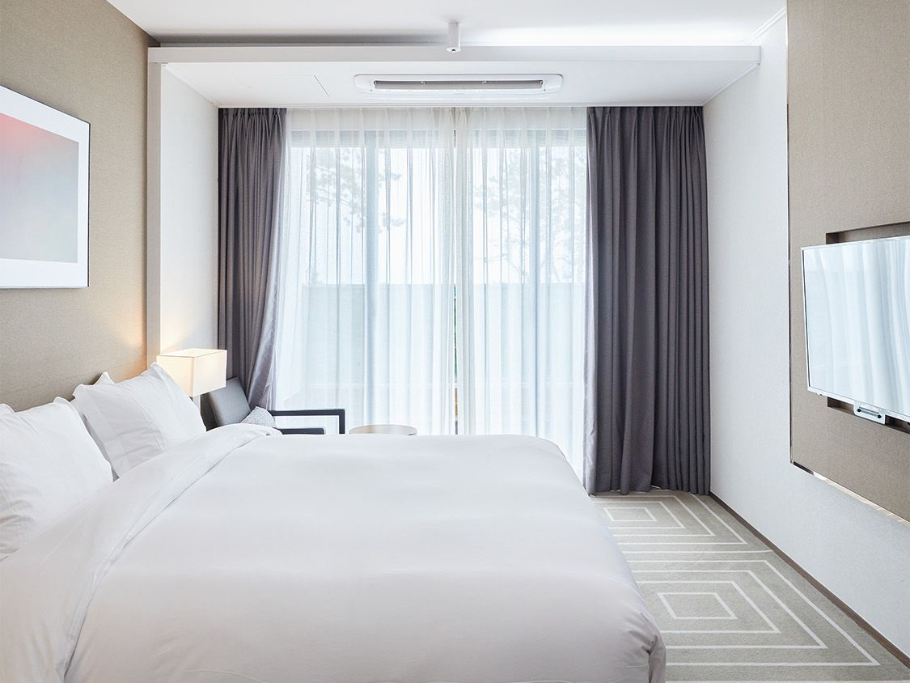
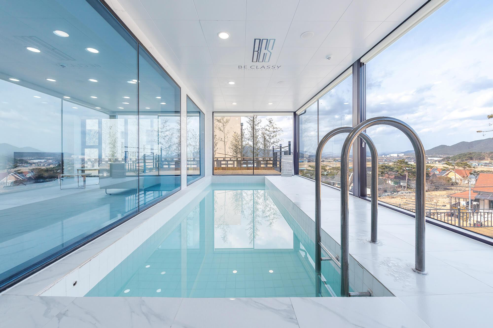
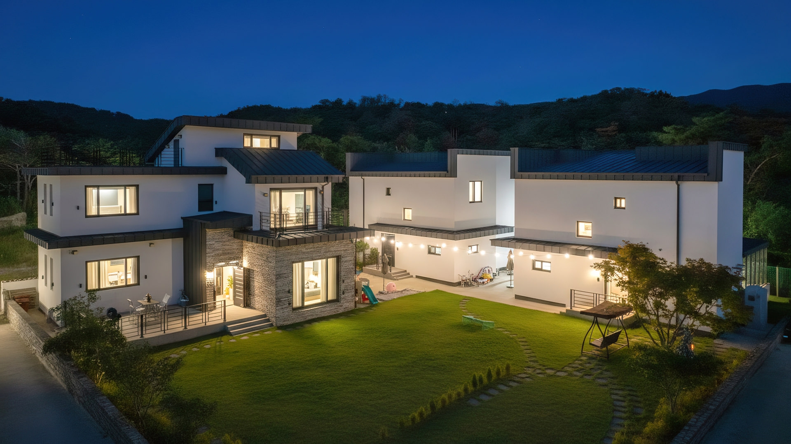
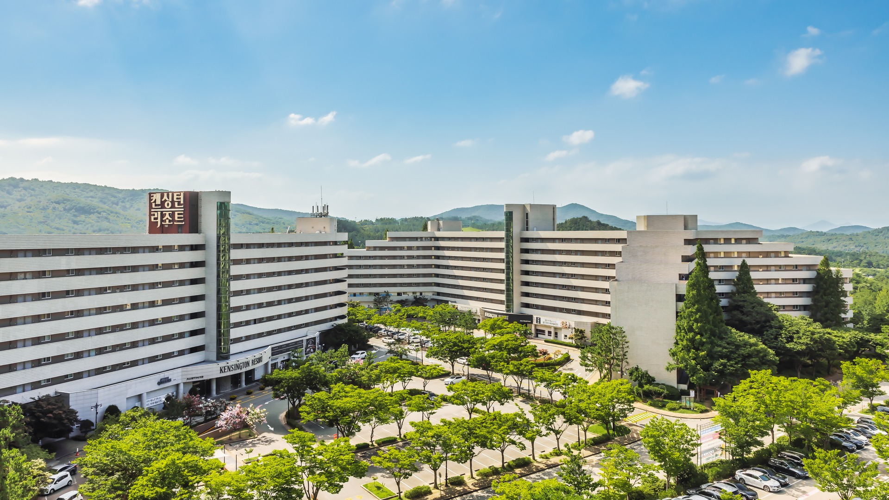
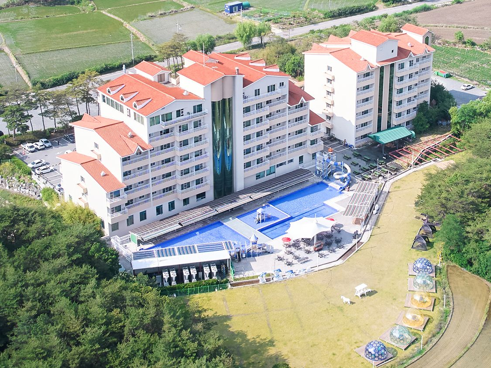
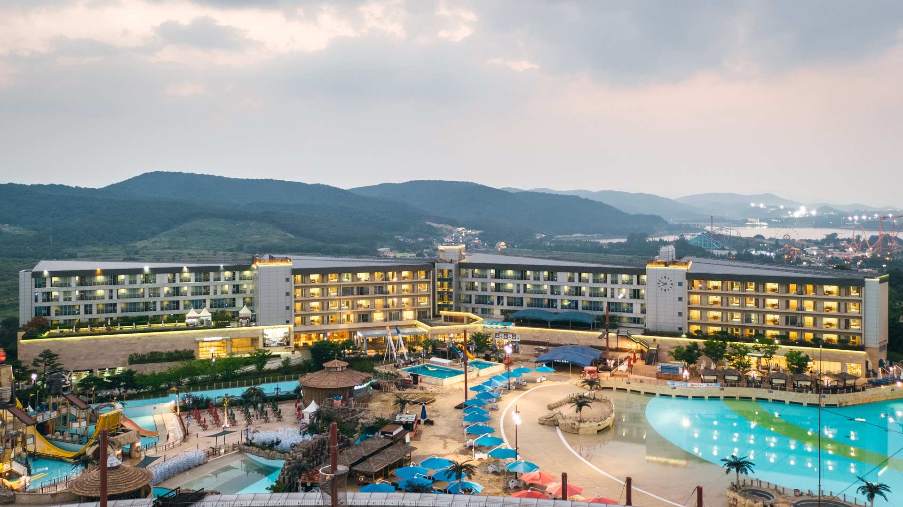

경주 세가족 12명 숙소 추천 10곳
- 12월 말은 최성수기입니다. 한 달 이상 전에 예약이 차는 경우가 많아 지금(11월)부터 객실 오픈 여부를 확인하세요.
- 겨울 실외 수영장은 대부분 휴장입니다. 2~6세 아이들에게 물놀이가 중요하다면 실내·온수 풀 운영 여부를 꼭 확인하세요.
- 호텔은 가족당 1실(총 3실), 독채 풀빌라는 12명 한 채를 기준으로 봤습니다. 독채는 기준인원 초과 시 1인당 추가요금이 붙고 영유아 인원 산정 방식이 숙소마다 다릅니다.
프리미엄 7곳

1. 힐튼 경주
위치 보문단지(보문호수 앞)
포인트 유적지 모티브의 대형 키즈 시설, 실내 수영장, 호수 뷰. 아이 동반 후기가 가장 많은 5성급.
객실 디럭스 패밀리(킹+싱글) × 3실 추천

2. 라한셀렉트 경주
위치 보문단지 (보문로 338)
포인트 키즈풀이 있는 실내 풀장, 호수 근처. 디럭스·패밀리·스위트 구성으로 가족 단위에 무난.
객실 패밀리 × 3실 또는 스위트 혼합

3. 소노캄 경주
위치 보문호수 바로 옆, 경주역 인접
포인트 호수뷰 풀&스파, 산책 동선 좋음. 8세 미만 추가인원 요금 무료로 소개(예약 시 조건 확인).
참고 객실+풀 이용을 합치면 가격대가 높은 편

4. 경주 황남관 한옥호텔
위치 황리단길 도보권
포인트 한옥 감성 + 호텔 서비스. 대릉원·황리단길을 걸어서 다니기 좋음. 온돌형 객실은 아이들 바닥생활에 편함.
참고 키즈 놀이시설은 없음 — 관광 위주 일정에 적합

5. 소노벨 경주 감포
위치 감포 해안 (시내에서 차로 이동)
포인트 바다 전망 리조트. 조용하게 쉬는 일정, 객실 안에서 아이들과 보내는 시간이 긴 가족에게 적합.
참고 보문·황리단길과 거리가 있어 차량 2~3대 필요

6. 경주 비클래시 키즈풀빌라 불국사점
위치 불국사 인근
포인트 키즈 전용 컨셉 독채. 12명이 한 집에서 지내며 아이 낮잠·취침 시간을 맞추기 편함.
확인 최대 인원·객실 수는 반드시 문의(타입별 상이)

7. 경주 블리블리 키즈 독채 미온수 풀빌라
위치 감포·불국사권
포인트 미온수 풀이 있는 키즈 독채. 겨울에도 물놀이 가능한지가 핵심 — 동절기 운영 확인 필수.
확인 12인 수용 가능 타입/추가요금 문의
중급 3곳

8. 켄싱턴리조트 경주
위치 보문관광단지
포인트 코코몽 키즈플레이, 팜빌리지, 트리하우스 등 키즈 시설이 가장 풍부. 취사 가능 객실.
가격 참고 2025 세일 시점 약 13.9만원대 노출 사례(성수기는 더 높음)


10. 경주 강동리조트 (구 블루원)
위치 경주 외곽(강동), 시내까지 차량 이동
포인트 전 객실 취사 가능으로 아이 식사 해결이 쉬움. 넓은 부지, 가성비 중심.
참고 워터파크는 성수기(여름) 운영 — 12월 이용 불가 가능성 큼
우리 가족 상황별 추천
- 아이 놀이 최우선: 힐튼 경주, 켄싱턴리조트(중급)
- 한 집에서 12명 같이: 비클래시, 블리블리 (타입·인원 문의)
- 관광·산책 우선: 황남관 한옥호텔, 소노캄 경주
- 가성비 + 취사: 강동리조트, 성호리조트
※ 사진·정보는 여기어때 숙소 페이지 대표 이미지와 공개 검색 정보를 바탕으로 했습니다. 12월 말 요금·잔여 객실·수영장 운영·영유아 인원 기준은 실시간 변동이 크므로 정확한 가격은 예약 전 직접 확인하세요(요금은 확인되지 않아 임의로 기재하지 않았습니다). 독채 풀빌라 2곳의 12인 수용 여부는 별도 문의가 필요합니다.